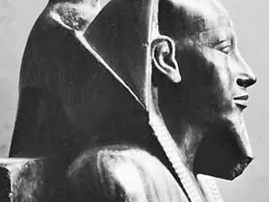
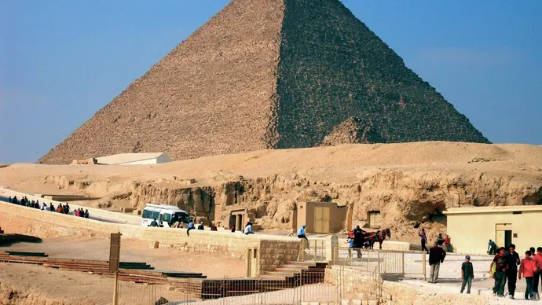
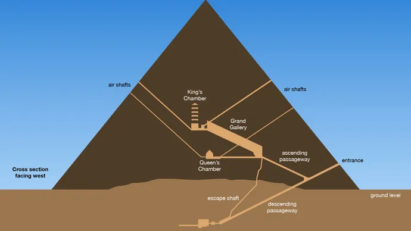
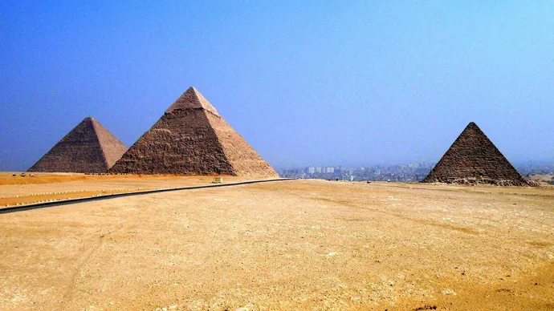

Pyramids of Giza, Arabic Ahrāmāt Al-Jīzah, Giza also spelled Gizeh, three 4th-dynasty (c. 2575–c. 2465 BCE) pyramids erected on a rocky plateau on the west bank of the Nile River near Al-Jīzah (Giza) in northern Egypt. In ancient times they were included among the Seven Wonders of the World. The ancient ruins of the Memphis area, including the Pyramids of Giza, Ṣaqqārah, Dahshūr, Abū Ruwaysh, and Abū Ṣīr, were collectively designated a UNESCO World Heritage site in 1979.The designations of the pyramids—Khufu, Khafre, and Menkaure—correspond to the kings for whom they were built. The northernmost and oldest pyramid of the group was built for Khufu (Greek: Cheops), the second king of the 4th dynasty. Called the Great Pyramid, it is the largest of the three, the length of each side at the base averaging 755.75 feet (230 metres) and its original height being 481.4 feet (147 metres). The middle pyramid was built for Khafre (Greek: Chephren), the fourth of the eight kings of the 4th dynasty; the structure measures 707.75 feet (216 metres) on each side and was originally 471 feet (143 metres) high. The southernmost and last pyramid to be built was that of Menkaure (Greek: Mykerinus), the fifth king of the 4th dynasty; each side measures 356.5 feet (109 metres), and the structure’s completed height was 218 feet (66 metres). All three pyramids were plundered both internally and externally in ancient and medieval times. Thus, the grave goods originally deposited in the burial chambers are missing, and the pyramids no longer reach their original heights because they have been almost entirely stripped of their outer casings of smooth white limestone; the Great Pyramid, for example, is now only 451.4 feet (138 metres) high. That of Khafre retains the outer limestone casing only at its topmost portion. Constructed near each pyramid was a mortuary temple, which was linked via a sloping causeway to a valley temple on the edge of the Nile floodplain. Also nearby were subsidiary pyramids used for the burials of other members of the royal family.
|  | Khafre, also spelled Khafra, Greek Chephren, (flourished 26th century BCE), fourth king of the 4th dynasty (c. 2575–c. 2465 BCE) of ancient Egypt and builder of the second of the three Pyramids of Giza. Great Sphinx and the pyramid of Khafre Great Sphinx and the pyramid of Khafre Khafre was the son of King Khufu and succeeded the short-lived Redjedef, probably his elder brother. He married his sister Khamerernebti, Meresankh III, and perhaps two other queens. Although many of his relatives were hastily buried in cheap tombs, his own pyramid was almost as vast as the Great Pyramid of his father. Khafre’s valley temple, linked to the pyramid by a causeway, was constructed of great monolithic blocks of granite and contained remarkable statues of the king carved from diorite taken from a remote quarry in the Nubian Desert. Near the causeway is located the Great Sphinx (see sphinx), which many consider to bear Khafre’s features. |
|
Khufu’s pyramid is perhaps the most colossal single building ever erected on the planet. Its sides rise at an angle of 51°52′ and are accurately oriented to the four cardinal points of the compass. The Great Pyramid’s core is made of yellowish limestone blocks, the outer casing (now almost completely gone) and the inner passages are of finer light-coloured limestone, and the interior burial chamber is built of huge blocks of granite. Approximately 2.3 million blocks of stone were cut, transported, and assembled to create the 5.75-million-ton structure, which is a masterpiece of technical skill and engineering ability. The internal walls as well as those few outer-casing stones that still remain in place show finer joints than any other masonry constructed in ancient Egypt. |
 |
|  | The entrance to the Great Pyramid is on the north side, about 59 feet (18 metres) above ground level. A sloping corridor descends from it through the pyramid’s interior masonry, penetrates the rocky soil on which the structure rests, and ends in an unfinished underground chamber. From the descending corridor branches an ascending passageway that leads to a room known as the Queen’s Chamber and to a great slanting gallery that is 151 feet (46 metres) long. At the upper end of this gallery, a long and narrow passage gives access to the burial room proper, usually termed the King’s Chamber. This room is entirely lined and roofed with granite. From the chamber two narrow shafts run obliquely through the masonry to the exterior of the pyramid; it is not known whether they were designed for a religious purpose or were meant for ventilation. Above the King’s Chamber are five compartments separated by massive horizontal granite slabs; the likely purpose of these slabs was to shield the ceiling of the burial chamber by diverting the immense thrust exerted by the overlying masses of masonry. The question of how the pyramids were built has not received a wholly satisfactory answer. The most plausible one is that the Egyptians employed a sloping and encircling embankment of brick, earth, and sand, which was increased in height and in length as the pyramid rose; stone blocks were hauled up the ramp by means of sledges, rollers, and levers. According to the ancient Greek historian Herodotus, the Great Pyramid took 20 years to construct and demanded the labour of 100,000 men. This figure is believable given the assumption that these men, who were agricultural labourers, worked on the pyramids only (or primarily) while there was little work to be done in the fields—i.e., when the Nile River was in flood. By the late 20th century, however, archaeologists found evidence that a more limited workforce may have occupied the site on a permanent rather than a seasonal basis. It was suggested that as few as 20,000 workers, with accompanying support personnel (bakers, physicians, priests, etc.), would have been adequate for the task. |
In 1925 a pit tomb containing the transferred burial equipment of Khufu’s mother, Queen Hetepheres, was discovered near the upper end of the causeway of Khufu. At the bottom of a deep stone-filled shaft was found the queen’s empty sarcophagus, surrounded by furniture and articles of jewelry attesting to the high artistic ability and technical perfection of the 4th-dynasty craftsmen. Surrounding the three pyramids are extensive fields of flat-topped funerary structures called mastabas; arranged in a grid pattern, the mastabas were used for the burials of relatives or officials of the kings. Besides the core mastabas of the 4th dynasty, numerous mastabas from the 5th and 6th dynasties (c. 2465–c. 2150 BCE) have been found around and among the earlier structures.In the late 1980s and ’90s, excavations in the environs of the pyramids revealed labourers’ districts that included bakeries, storage areas, workshops, and the small tombs of workers and artisans. Mud sealings seem to date the workshop areas to the late 4th dynasty. The tombs range from simple mud-brick domes to more-elaborate stone monuments. Statuettes were found within some of the structures; hieroglyphic inscriptions on tomb walls occasionally identify the deceased. |
 |